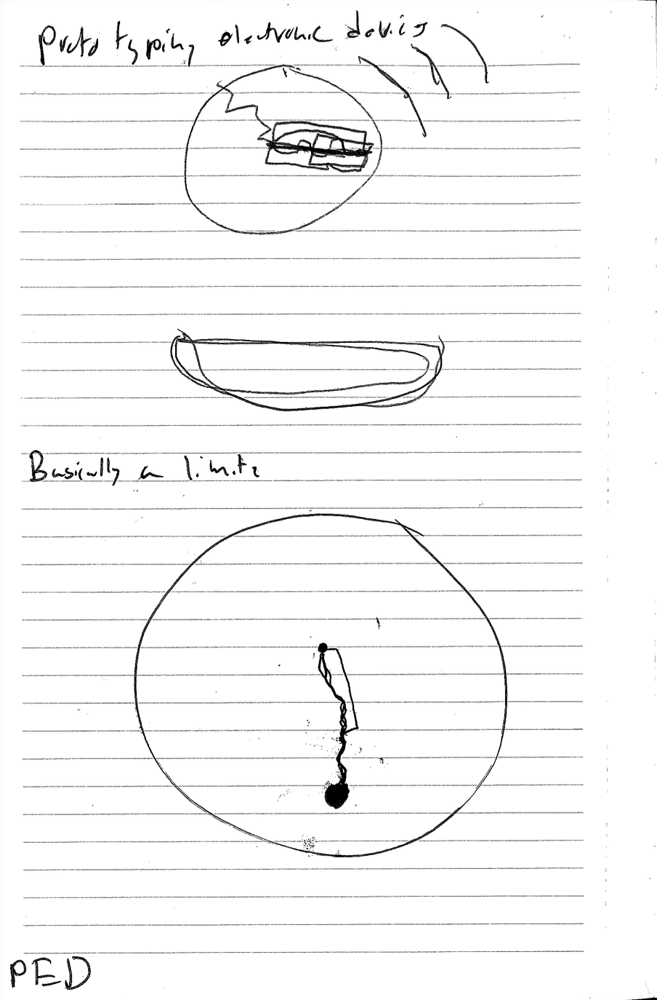

Prototyping Electronic Devices
Make it Once Make it Again Proposal
I am interested in navigation and how we can diversify our relationship with objects through embedded intelligence. I don't want to use my phone for everything because I hate interacting with it. Lifeless, flat, dead, I want to touch, like really touch.
For a while I have been tracking my location on a hiking app Gaia. I like to journal through tracing my movement around the city. Seeing where I have been and gone is compelling because it allows me a sense of exploration and enhances my memory.
In hiking there's this concept called the green tunnel, a trail effect caused by trees on both sides enclosing the trail, a green tunnel extends in front of you. Fundamentally, as we move through an area for the first time, we are in such a tunnel defined by the streets and buildings to our sides. Over time, we reach the same places by some other route and our understanding of the terrain shifts. An experience which was once linear has become mappable as we have two experiences to triangulate from. As time goes on, our relationships to places are enriched through repetition.
I want a device which will allow me to view my location compared to my past locations. I want it to slowly develop and grow mold-like over time. Ideally, it's round with an e-ink display to keep it low power and cheap. Ideally it charges from a tray and fits nice in the pocket. I want it to be stainless steel, 3D printed. Presently I am developing this idea with a designer named Aram. We have $283 from the makerspace prototyping fund and are hoping to get more, something like $2k is possible.
This morning I thought about a different configuration where a button is pressed and a receipt printer spits out directions with a text based map. This seems hard to code but a fun door walker outer, last minute press and go.